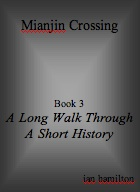

Ian Hamilton Writings

A Long Walk Through A Short History
Excerpt from chapter 2
I stood beside the same great curving wall of earth that I'd stumbled upon all those years ago, wondering what I was doing there. 'Too old,' I said to a cow grazing on the other side of the fence, 'for this sort of thing.'
The cow mooed a tired reply and went back to eating grass.
Strange things cows; all that weight and strength from eating grass! I recalled one of my father's silly jokes. I must have been about six. We were driving in the country and my father said 'See those lumps of grass over there'. I looked out the window but couldn't see any lumps of grass, couldn't work out what my father was on about. 'The cows' he said, 'lumps of grass shitting grass'. Then he laughed and asked me what came first, the cow or the grass? My father was like that.
It was evening and the birds had begun their noisy settling in for the night. Cool air drifted down the escarpment. The last long shadows of trees fell across the earth and over the mound of the ring, accentuating its height. Like a circus ring it was. It was extraordinary that, despite all the greedy land grabbing since Europeans first entered the valley, despite the effects of weather and the hoofs of cattle, the ring remained. Not only that but I could see the gap in the wall and the path that led from it towards the small ring.
The whole thing had been carefully positioned at the northern end of a curving ridge. To the east, just beyond the ring, the land sloped steeply down to a creek. To the west, beyond the thick forest that ran along the road, I could see the tops of the high ranges that enclosed the valley. To the south the pathway, clearly visible, led between tall trees. Twenty paces beyond the ring's northern arc stood a tall gum tree. It seemed ancient.
In that half light, with fence posts and wires faded into a fecund background of bush, it was possible to imagined a world before the coming of Europeans, to imagine men coming to prepare this sacred site. And to imagine a young boy of thirteen or fourteen - about the same age I was when began the journey through my own pubescent initiations - coming to this place of initiation, having travelled across a land untracked by paved road and unlit by streetlamps, coming full of fear and expectation to this great circle carved out of the body of the earth. Would he not have come full of fear and excitement to begin the trials of manhood? Which would have been much tougher than the trials I encountered. There'd be no shoes to protect his feet, or tins of camp pie to ease his hunger, or pillows to lie on at night; no way of knowing what might be in store from one moment to the next, knowing only that he had left the maternal security of his childhood home forever.
As I stood there gazing abstractedly on the ring I wondered how long it would last. Relentless progress was pushing the edge of the city westward. There were new suburbs just beyond the hills that formed the eastern rim of the valley. Many of the old farms and much of the remaining bush had been turned into country estates, some of which were already being subdivided. How long would it be before this once-sacred site would be sold off for some hobby farm and the ring's embankment levelled, leaving nothing to remind anyone of what had been, the bora ground become just one more bit of the ancient palimpsest, lying dormant beneath the body of the earth with nothing at all, apart from maybe a brief mention in some ancient document hidden away in some obscure library reference section, to remind anyone of what had been? The dirt road that led past the ring would be sealed so that the shining four wheel drives of landowners wouldn't get dusty. Ride-on mowers would trim imported lawn where the ring had been. Horse stables or machinery sheds would cover the ancient pathway. And the people would not understand that what they built had no real or lasting economic foundation, that their dream acreage would eventually succumb to a returning bush that would, in some undreamed of variation of what had been there in the first place, reclaim the land.
Darkness fell. I spread my ground sheet and lay down beside the ring (I was yet prepared to enter). I was tired and looked forward to sleep. But sleep didn't come. The ground was hard and damp, the night cooler than I'd expected. I lay there listening to the sounds of the night: owl hoots, grunts and hisses of possums, sighs and snaps of dry branches and other unidentifiable noisesAnd all the time I had the uneasy feeling of being watched. That was the worst bit; the sensation that I was trespassing and that someone was watching and judging.
When I did finally fall into that wonderful pre-dawn oblivion of deep sleep the birds began. It was the kookaburras first, followed by crows, magpies, butcherbirds, parrots, whistlers, whipbirds and a dozen other species that, at some other time, I might have taken an interest in. And beyond all that call and chatter, like some hardly perceptible but insistent bit bass player in some madly out of tune and misdirected orchestra, from out of the thickets along the creek, came the deep booming grunts of the Pheasant Coucals.
I rose from the hard ground, breakfasted from my meagre supplies of dried fruit, biscuits and condensed milk, repacked, put my backpack down and, steeling my resolve, walked into the middle of the ring. As I did the same feeling of being watched that I'd felt during the night returned. I turned to the old gum just beyond the circle's northern rim.
'Who are you?' I asked the tree.
'I am the guardian of the ring,' the tree replied.
'So it was you watching over me during the night?'
A waft of early breeze stirred the leaves, a soft rustling sound. The sun rose from behind the eastern rim of hills. The first shadows of morning spread across the ground and over the ring's encircling wall. I stood in the centre of the ring facing the guardian tree.
'Well, mister tree, are you angry with me?'
The tree stood still. There was something about that tree. I had the uncomfortable feeling that it was assessing me, trying to work out my real intentions. I stood there looking up at the tree in what I hoped was a suitably reverential attitude, waiting for a signal, something to indicate that what I was doing was all right.
Teewhee, tewaaaaa .....tewhew.......The a loud falsetto cry issued from the tree. The call hovered in the air awhile then declined to silence.
There's something special about Currawongs. You never see them in the city, only in the hills. They are birds of the high country, representatives of the pure and unpolluted world. If ever they succumbed to our relentless progress, as so many species have, that would really signal the end.
I called up at the tree in a pathetic imitation of the bird's call and waited. After what seemed ages an answering call came clear and pure through the morning air, a wolf-whistle-like Tewhew And the bird, clumsy at first, flew out and away, calling out of the sky as it went. I watched the bird grow smaller and smaller against the blue until it was gone. I felt terribly alone.
I collected my backpack and went through the narrow gap in the wall onto the path. At first the way was clear and easy to follow, the tall trees that lined the path giving an impression of a cathedral aisle down which one might walk as to some sacred alter. The sun, now above the eastern hills, cast slanting beams through the trees, spotlighting clumps of grass, fallen twigs, small flowers. Dark shadows fell across the path, creating cool lees where dew persisted. In the open places the rising sun drew moisture from the previous night's fall of humid air. Cicadas buzzed and birds called from the forest. A breeze whispered through the treetops, a soft voice.Once, the voice whispered, there was a vast and godless land without ceremony or ritual, without the necessary markers by which people could make sense of it, a world without definition, with nothing to define or give boundaries to the people's lives. Tired of this chaos and formless existence I called the people together and told them that things must change, that they must define the various stages of life, that they must establishing their rituals and ceremonies in accordance with the nature of their world. I found this place and had the people build these rings. They scraped them out of the earth with what simple tools they could make and we laid down a path between them and placed along that path images of animals and birds and other things that sustained them. And into that place I had them bring the young ones whose minds were open to the unexpected and who had the capacity to imagine. From the ring they were led them along the path to see all of the things that had been put there and they were amazed. And there were among the things which they saw all the acts of the wise men and all the tricks of those well instructed in the arts of mime and magic and, towards the end, at the sacred ring, they were confronted by the simple but fearful gestures of the priests. Oh, the trials were long. They were pushed to their limits, those boys, until they shed tears of pain and frustration, until they were so tired and miserable that they could take in nothing from the external world. They did not stop there, but went on and on, not for a little way and not for just a day, but for many days, so that they might know that what they had left behind must be left behind.
The voice died. I walked on along the path, aware of the heavy crunching of my boots on the soft earth. After a while the steady tread of my boots became hypnotic, became the centre of my attention. They were like separate things and not part of me at all. High above, the muted murmur of morning breeze carried bird song through the leaves. Walking along that path seemed a special privilege. I wondered about the people who'd made it, how they must have done it in accordance with certain laws, without the aid of steel picks or shovels or theodolites or stringlines or laser beams. Using only the tools they could put together from local rock and flint and wax and fibre they had dug and scratched and pushed at the earth until, with endurance we would find difficult, if not unnecessary, they had made this sacred place. After so much effort it seemed unfair that the place would never again feel the patter of young and eager feet.
A few hundred paces from the large ring the tree cover gave way to open country, affording glimpses of the surrounding hills. Apart from the road and the rusting barbed wire fence that ran along side it there was no sign of human habitation. I was about to continue on when I noticed an indentation etched faintly into the ground. I looked more closely. They were cart tracks! They came from the direction of the road, crossed the bora path and continuing down towards the creek.
I was at an intersection of ancient pathways!
home | sculpture | fluros | paintings | journals drawings | prints | writings | biography | e mail